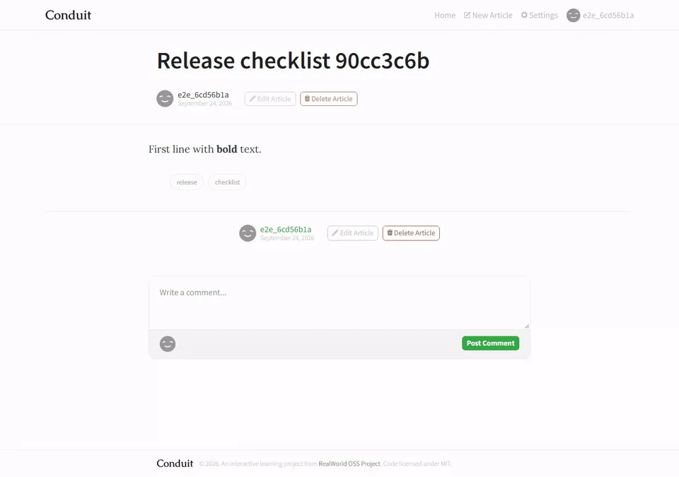
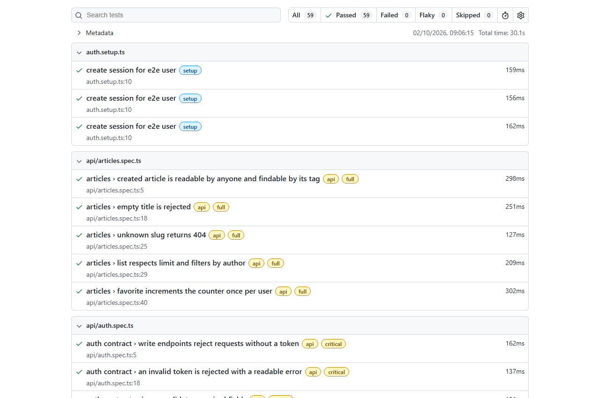

Playwright Reference Suite
Queria uma suíte que pudesse rodar a cada mudança, sem depender de uma demo pública ou dos dados de uma execução anterior. Usei o Conduit, uma aplicação de artigos, para testar esse desenho.
Um teste verde. Até deixar de ser.
Eu verificava se uma tag recém-criada aparecia em /api/tags. Com o banco vazio, passava. Depois de algumas execuções, falhava: esse endpoint só retorna as dez tags mais usadas.
Corrigi a verificação para usar o filtro ?tag=. O problema estava na suposição do teste sobre a API.
17 testes críticos em ~10s de execução; 59 testes na rotina noturna em três navegadores.
Decisões de engenharia
Dados isolados por teste e autenticação via API. Jornadas críticas a cada push; cobertura ampliada em três navegadores à noite. Falhas conhecidas permanecem visíveis, e retries são reportados separadamente.
Ver a gravação original